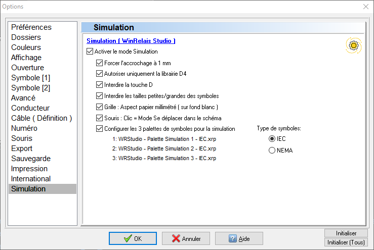
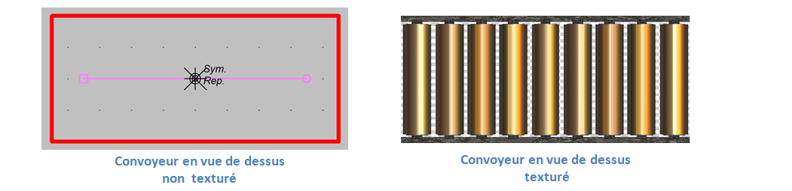
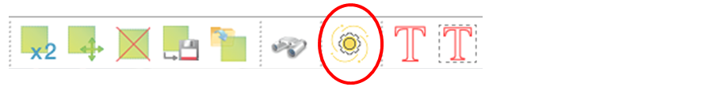
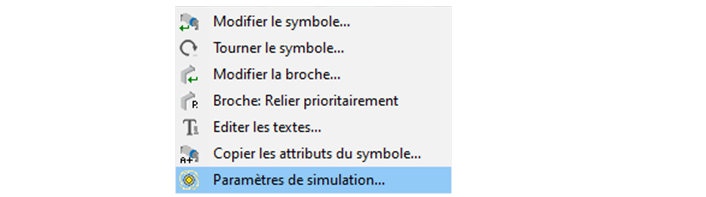
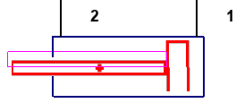
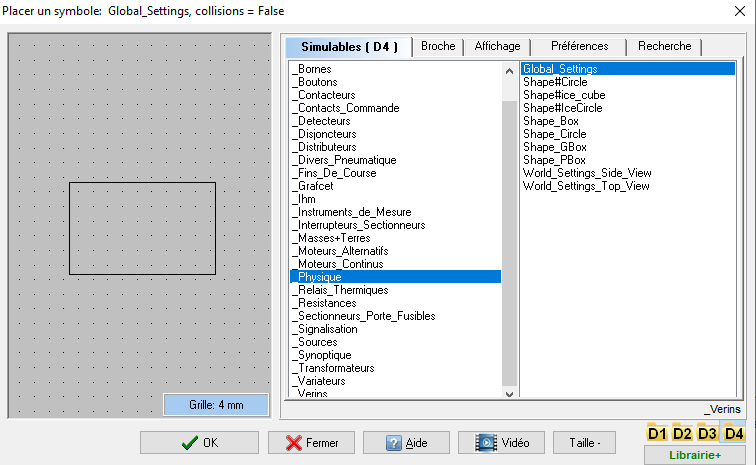
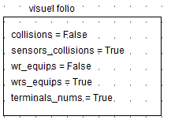
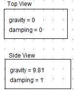

Simulateur
Intégration dans WinRelais
-
Le simulateur est actif par défaut. L'activation paramètre WinRelais avec les réglages suivants (Outils/Options) : 
-
La touche clavier k permet d'afficher/cacher les textures appliquées aux objets simulables : 
-
Le lancement du simulateur est réalisé en cliquant sur l'icône : 
-
un clic droit sur un objet simulable permet :
- d'éditer ses propriétés,
- d'effectuer une rotation au degré près des objets synoptiques et vérins. 
Restrictions
Modèle numérique
- Les charges mécaniques appliquées aux actionneurs (vérins, moteurs) sont fixes. Elles correspondent au point de fonctionnement nominal des actionneurs.
- Les transitoires des courants et des tensions ne sont pas simulées.
- La fréquence maximale d'acquisition des appareils de mesure est limitée à 50Hz (1 mesure toutes les 20 ms).
- Les mesures sont données en valeur efficace ou moyenne uniquement.
Edition des schémas
- Il n'existe pas pour l'instant de 'moulinette' pour convertir des schémas antérieurs en schémas simulables.
- L'épaisseur des traits pour les conducteurs est fixe.
- Seule la police de caractères 'Arial' est supportée.
- L'alignement de texte supporté est 'gauche' uniquement.
- Les caractères gras et italiques sont transformés en caractères normaux.
- Les cadres et les cartouches de folio ne sont pas dessinés dans le simulateur.
- Une seule taille de symbole est utilisable : la taille 'normale'.
Edition des symboles dans WinSymbole
Certaines fonctionnalités graphiques proposées par WinSymbole ne sont pas prises en compte par le simulateur :
- Pas de courbe de Bézier, ni de texte, cercle non rempli uniquement,
- Epaisseur des contours fixe
- Pas de graphique SVG
- Pas d'image d'arrière plan
- Pas de mini-dessin.
Anomalie d'édition d'un symbole
- 

- Il peut arriver qu'un décalage de la texture et de la forme de collision survienne suite à la rotation d'un symbole dans WinRelais. Il est alors nécessaire de recentrer l'origine du symbole dans WinSymbole. (Voir page 17 sur la question du barycentre)
- Il est préférable de mener la rotation plutôt dans WinSymbole, d'ajuster avec soin le barycentre puis de sauver le symbole pour réutilisation.
Blocs de configuration généraux

Ce bloc ajuste certains détails d'affichage du folio courant, il est essentiellement utilisé à des fins de mise au point :

- collisions = (False/True) : visualise les formes de collision des objets physiques,
- sensors_collisions = (False/True) : visualise les formes de collision des détecteurs et des fins de course,
- wrs_equips = (False/True) : visualise les numéros des équipotentiels définis par le simulateur,
- wr_equips = (False/True) : visualise les numéros des équipotentiels définis dans WinRelais,
- terminals_nums = (False/True) : visualise les numéros de bornes des appareils.

Les blocs World_Settings définissent le comportement du moteur physique 2D. Il est possible d'ajuster le moteur en :
- vue de dessus (Top view) : la gravité n'est pas prise en compte,
- vue de côté (Side view) : la gravité est prise en compte.
On ne peut placer qu'un seul bloc World_Settings par folio. Il est possible d'avoir des vues différentes d'un folio à l'autre, par exemple :
- un folio avec un espace physique décrit en vue de dessus,
- le folio suivant avec un espace physique en vue de côté.
Le coefficient de 'damping', compris entre 0 et 1, simule la friction de l'air qui s'exerce sur un mobile.